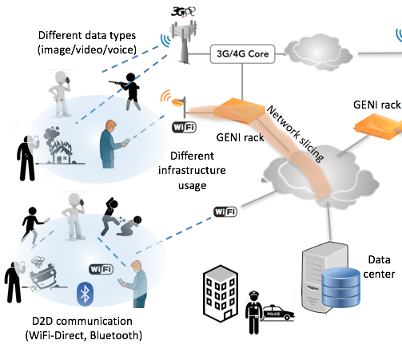

|
Recent Projects
-
Rapid and Resilient Critical Data Sourcing for Public Safety and Emergency Response
In public safety and emergency response, the key for a successful recovery is on-time and reliable communication between the people reporting the incident and the emergency management authorities. Recently, crowd sourcing applications have proven to be promising tools to gather information with tremendous participation from the crowd. In emergency scenarios, however, such crowd sourcing solutions should be robust and resilient as the network could be congested or the underlying cellular infrastructure is damaged or temporarily lost. This project addresses these challenges by introducing a novel framework that integrates various technologies and tools for modeling and operation of large-scale crowd sourcing-based emergency response systems.

More specifically, it investigates (i) large-scale critical data collection via a mobile app and management process to be used in the investigation of an emergency incident, (ii) near-real-time processing of the gathered heterogeneous data in a cloud computing environment for critical information extraction such as faces of people in the videos and photos, (iii) adoption of D2D-based communication as a complementary component to improve system resilience in case of congestion's and failures in network infrastructure, and (iv) utilization of Global Environment for Network Innovations (GENI) network slices as dedicated bandwidth for time-sensitive communication in emergency response as well as to enhance wide area resilience of the system. [Read more]
-
Analysis and design of efficient routing algorithms in Delay Tolerant Networks
Delay tolerant networks (DTN), also called as intermittently connected mobile networks (ICMN), are wireless networks in which at any given time instance, the probability
that there is an end-to-end path from a source to a destination is low. This is caused by the high mobility and low density of
the nodes in the network.
This property makes the routing of messages in DTNs a challenging problem. The conventional solutions do not generally work in DTNs because they assume
that the network is stable most of the time and failures of links between nodes are infrequent.
Therefore, store-carry-and-forward paradigm is used in routing of messages in DTNs. When a node
has a message but no connection to any other node in the network, it stores the message in its buffer and carries the
message until it meets a new node that does not have this message. If the encountered node is assessed to be useful in
the delivery of the message, then the message is transferred to it. Here the key point is how to select the next node that the message will be forwarded to. Should the message be forwarded or is it
better to replicate it to increase delivery chance?
To solve the routing problem in DTNs in an efficient way, we proposed several algorithms with different techniques and goals.
- Multi-period spraying of message copies: We modeled a multi-period
spraying based routing algorithm. The goal is to minimize the average copy count used per
message until the delivery while maintaining the predefined
message delivery rate by the given deadline.
In each period, some
number of additional copies are sprayed into the network,
followed by the wait for message delivery. At any time instance,
the total number of message copies distributed to the network
depends on the urgency of achieving the delivery rate by the
given deadline for that message. Waiting for early delivery in the
initial periods with small number of copies in existence decreases
the average number of copies sprayed in the network till delivery.
We found out the optimum copy counts necessary in 2- and 3-period variants of our algorithm and
then we also generated an idea showing how the presented approach can be
extended to more periods. We did an in-depth analysis of the
algorithm and validated the analytical results with simulations.
The results demonstrate that our multi-period spraying
algorithm outperforms the algorithms with single spraying
period. Check related paper.
- Utilization of mobility correlation between nodes: In real life, the mobility of people (i.e. human held devices) are not
random. Moreover, it is also reasonable to expect correlation between them. We analyze the correlation between the meetings of each node with other
nodes and focus on the utilization of this correlation for efficient
routing of messages. We introduce a new metric called conditional
intermeeting time, which computes the average intermeeting time
between two nodes relative to a meeting with a third node using
only the local knowledge of the past contacts. Then, we show how
we can utilize the proposed metric on the existing DTN routing
protocols to improve their performance. For shortest-path based
routing protocols in DTNs, we propose to route messages over
conditional shortest paths in which the link cost between nodes
are defined by conditional intermeeting times. Moreover, for
metric-based forwarding protocols, we propose to use conditional
intermeeting time as an additional delivery metric while making
forwarding decisions of messages. Check related paper.
- Exploiting social structure and relations: In addition to intermittent connectivity which
impacts routing most strongly, we also analyze the effects of
underlying social structure over the communication network. In
a social network, nodes interact in diverse ways so that some
nodes meet each other more frequently than others. We first propose a new network model to reflect the underlying
social structure over the network nodes, then we study the effects
of this model on the performance of multi-copy based routing
algorithms. If source and destination nodes are in the same community, it may be a good strategy to distribute all allowed copy count (L) to the
members of this community. However, if source and destination are in different communities, source needs to distribute these copies carefully to
obtain the optimum delivery delay. We did an analysis of delivery delay with different number
of copies given to source’s community (Lin) and destination’s community (Lout) and found the optimum Lin and Lout values that give the minimum
delivery delay. Check related paper.
In another work, we also introduced a new metric that detects the quality of friendships between nodes
accurately. Then, utilizing this metric, each node defines its community as
the set of nodes having close friendship relations with itself either directly
or indirectly. We also consider the indirect relations between nodes in a way
that makes them relevant to routing. Then, we present Friendship Based
Routing in which temporally differentiated friendship relations are used in
forwarding of messages. We propose to use
different friendship communities in different time periods of a day as a better
way of handling temporal variation of relations than previous solutions.
Simulations on both real and synthetic traces show
that the introduced algorithm is more efficient than the existing algorithms. Check related paper.
|
|